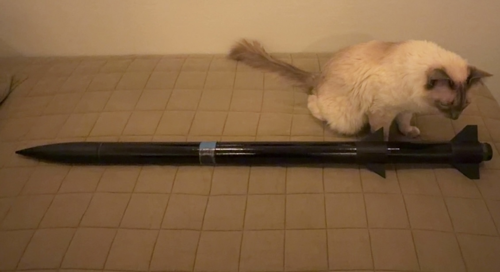

- Timeframe
- July 2025 to June 2026
- Team
- Mission Launch Rocketry, 5-person avionics team
- Role
- Avionics Lead
- Scope
- Bay layout, component and material selection, FDM parameter tuning, dual-redundant flight computer integration
- Tools
- Onshape, SolidWorks,OpenRocket, FDM printing
- Status
- 34% mass reduction, 1.12-cal stability margin, apogee predicted within 7% of measured data, final flight to 5,082 ft
Objective
Mission Launch Rocketry set out to become the first California community college team in the Bay Area to launch a two-stage high-power rocket with dual-deploy recovery.
My piece of that was the avionics bay: keep it light enough that the added mass of a second stage did not eat into our stability margin, and make the flight computers reliable enough that dual-deploy and staging worked properly.
Approach
Designed the first iteration of the bay around fitment and structural rigidity, built to survive a hard landing without failing. After running it through initial stress testing, I reworked the layout to shrink the bay's footprint, swapped in lighter batteries and electronics, and tuned the FDM print parameters (infill percentage, wall thickness, and infill geometry) until the mass came down without giving up structural integrity. I modeled the full airframe in OpenRocket alongside that work to confirm a lighter bay could still hold a safe stability margin once the second stage was added.
The first two launch attempts each cut short. Because the bay was built around dual-redundant recovery, we recovered the airframe intact both times and had real flight data to diagnose the issues. The first failure came down to a faulty barometric sensor reading, fixed by adding pressure relief holes to the avionics sleeve. The second was wind-induced tilt that pushed the rocket outside its staging window, so I widened the recovery system's angle tolerance to 45 degrees before the next attempt.


Result
The redesigned bay came in 34% lighter, worth roughly 318 ft of simulated apogee, and the OpenRocket model held a 1.12-cal stability margin with predicted apogee within 7% of what we measured in flight. With the tolerance fix in place, the rebuilt rocket flew clean to 5,082 ft and completed dual-deploy recovery successfully.

